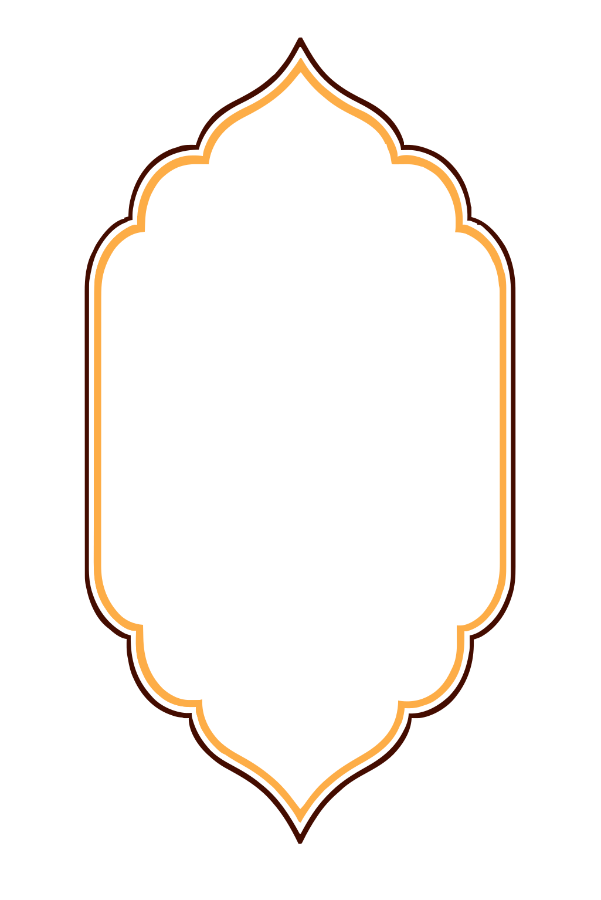

Eén vorm als bron: de puntboog van het sierkader. De saffraanlijn is telkens exact dezelfde vorm als de inktlijn, met een gelijke afstand langs alle zijden — ook onderaan, zoals in het origineel.

De brede, lage boog. Boven een sectietitel, om een portret, of als omlijsting van een korte zin.
De smalle, hoge boog met de puntige top. Om een foto, een prijs of een QR-code in te zetten.
De ronding van de boog als hoekstuk, met de tweede lijn op gelijke afstand. Voor de hoeken van een menukaart, poster of sluitsticker.